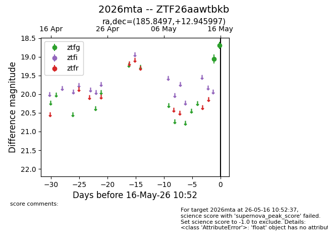
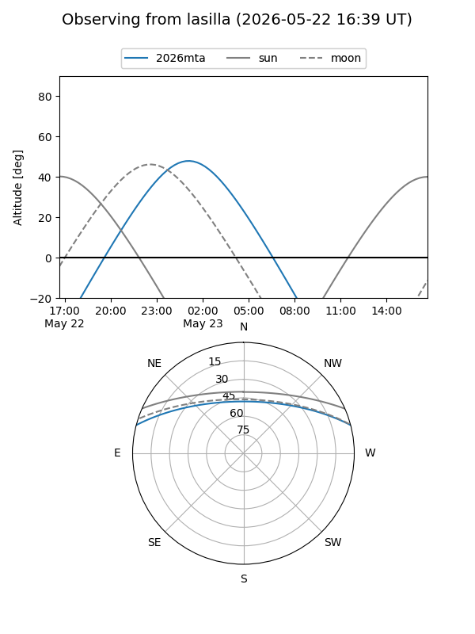
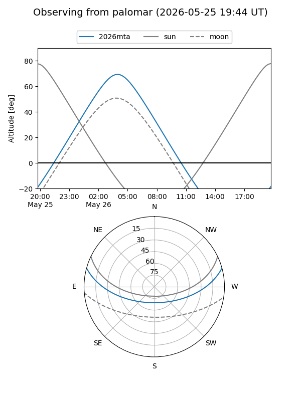
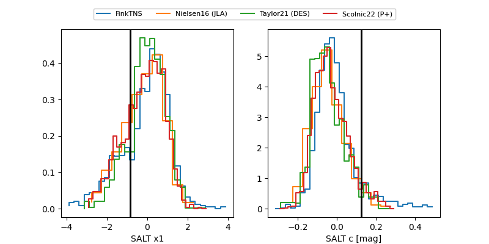

2026mta
Target 2026mta at 2026-05-16 10:54
Aliases and brokers:
FINK: link
Lasair: link
ALeRCE: link
TNS: link
YSE: link
alt names
ZTF26aawtbkb (ztf,fink_ztf)
2026mta (tns,yse)
Coordinates:
equatorial (ra, dec) = 185.8497,+12.94600
equatorial (HMS+DMS) = 12:23:23.92,+12:56:45.59
galactic (l, b) = (276.7293,+74.37346)
Flags:
Photometry:
last ztfg=18.69
2 ztfg detections
Lightcurve

Visibility


Additional plots
